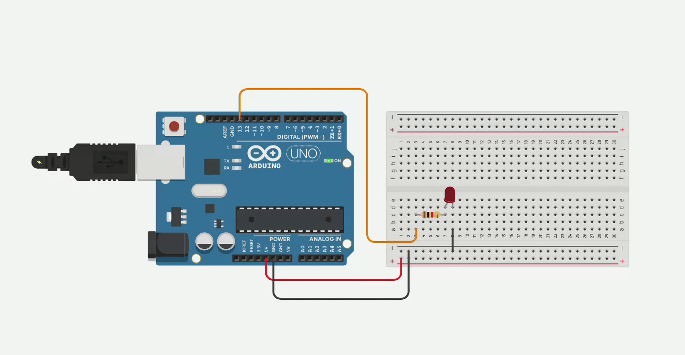
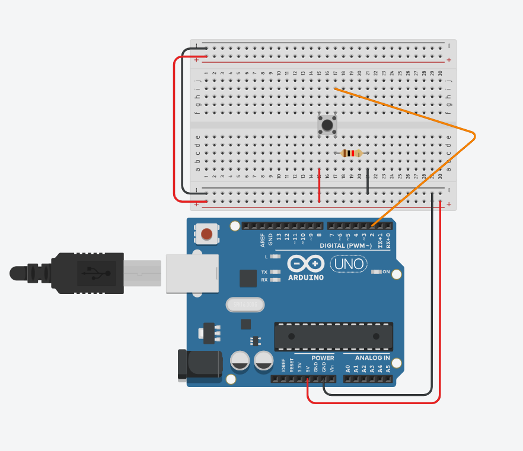
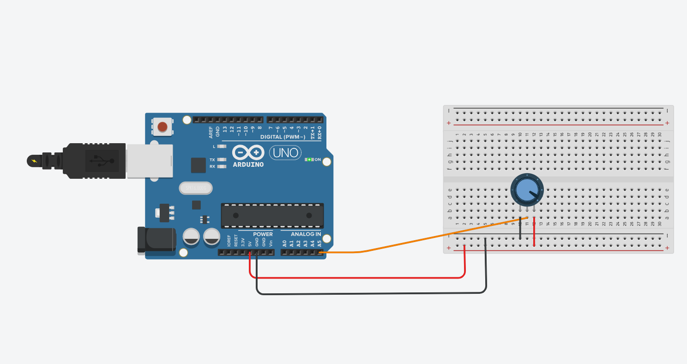
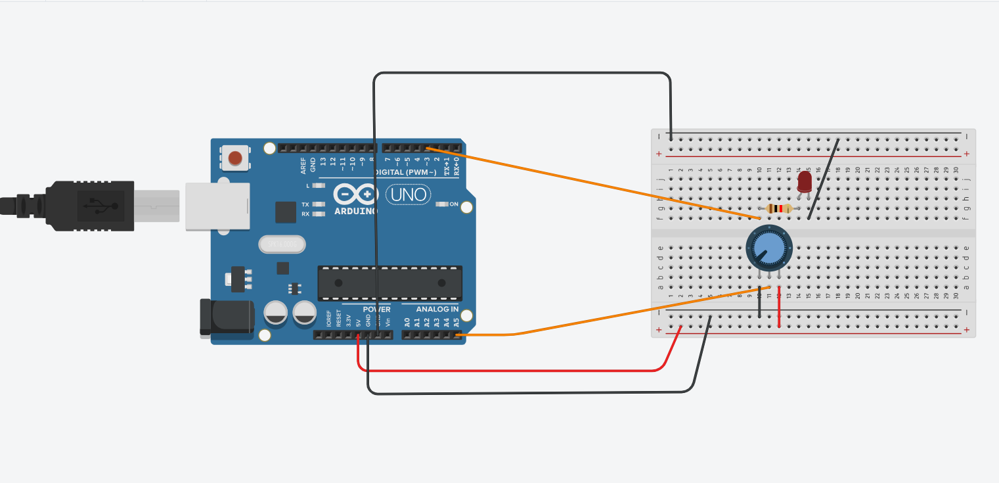

Introdução à programação com Arduino¶
Conceitos básicos de eletrônica¶
Tensão elétrica¶
- A tensão elétrica, também conhecida como diferença de potencial, ou voltagem, é a diferença de potencial elétrico entre dois pontos.
- Ela pode ser medida através de um voltímetro e sua unidade é o Volt (V).
- Ela representa a tendência que uma carga tem para ir de um ponto a outro. Sem tensão elétrica, não há corrente.
Corrente elétrica¶
- A corrente elétrica é o fluxo de partículas com carga elétrica dentro de um condutor.
- Há corrente quando há diferença de potencial.
- Pode ser medida por um amperímetro e sua unidade é o Ampere (A).
- Sua intensidade é medida pela quantidade de carga que passa por um intervalo de tempo.
- Pode ser contínua ou alternada.
Corrente contínua¶
- A corrente elétrica contínua mantém sua intensidade constante ao longo do tempo.
- Tipicamente produzida por pilhas, baterias e fontes.

Corrente alternada¶
- Sua intensidade varia ao longo do tempo.
- Rede elétrica doméstica funciona com base em corrente alternada.
Resistência¶
- A resistência elétrica é a capacidade que um corpo qualquer de se opor à passagem de corrente elétrica.
- É medida em Ohms \((\Omega)\)
Lei de Ohm¶
- Em termos gerais, a lei de Ohm afirma que a resistência (\(R\)) de um dispositivo condutor é dada pela razão da tensão elétrica (\(V\)) pela corrente (\(A\)):
$$ R = \frac{V}{I} $$ - Podemos calcular a corrente de um circuito elétrico utilizando essa equivalência da seguinte forma:
Circuitos Eletrônicos¶
- Um circuito eletrônico possui uma série de componentes eletrônicos para cumprir uma tarefa.
- Normalmente circuitos eletrônicos obtém entradas, através de sensores, processam essas entradas, e produzem uma saída.
Dispositivos de entrada¶
- Dispositivos de entrada, inputs, ou sensores, tomam sinais do mundo físico e os convertem em corrente ou voltagem.
- Exemplos de sensores:
- Sensor de gás;
- Termômetro;
- Fotocélulas;
- Potenciômetros;
- Sensor de presença;
- Sensor de distância;
- Sensor de umidade;
- etc.


Dispositivos de saída¶
- Dispositivos de saída convertem tensão elétrica ou corrente em sinais físicos.
- Exemplos de dispositivos de saída:
- Motores elétricos;
- LEDs;
- Alarmes sonoros;
- etc.


Digital vs analógico¶
- Sinais digitais podem assumir um número finito de valores. Normalmente, utiliza-se um sistema binário para sinais digitais.
- Verdadeiro ou falso;
- 0 ou 1;
- Com tensão ou sem tensão
- Sinais analógicos por sua vez podem tomar uma infinidade de valores.
- Exemplos de dispositivos que lidam com sinais digitais:
- Botões, LEDs, etc...
- Exemplos de dispositivos que lidam com sinais analógicos:
- Motores, potenciômetros, etc.

Modulação por largura de pulso¶
- Modulação por largura de pulso, ou PWM é uma técnica de modulação utilizada para obter resultados analógicos através de meios digitais.
- Uma onda quadrada é gerada alternando os sinais de 0 e 1 com uma determinada frequência.
- Quanto maior a frequência, maior o suposto valor analógico.

Microcontroladores¶
- Microcontroladores são utilizados para interpretar os sinais obtidos dos sensores e ativar determinadas ações nos dispositivos de saída.
- Eles executam a lógica do circuito.

Protoboard¶
- As protoboards são placas reutilizáveis utilizadas para construção de circuitos eletrônicos sem solda.

- As primeiras e as últimas duas linhas possuem conexões horizontais.
- As demais colunas são conectadas verticalmente.

- Devemos nos atentar a essas conexões na hora de construir nossos protótipos.
Resistores¶
- Resistores são dispositivos para limitar a passagem de corrente elétrica.
- Transforma energia elétrica em energia térmica (calor), fenômeno conhecido como efeito Joule.
- São muito utilizados em circuitos para que componentes não sejam fritados.

 - A resistência dos resistores normalmente é calculada de acordo com a seguinte tabela:
- A resistência dos resistores normalmente é calculada de acordo com a seguinte tabela:

LEDs¶
- LEDs são dispositivos que emitem luz visível.
- Muito utilizados em produtos eletrônicos para sinalizar avisos, como erros ou se o produto está em standby ou não.
- Podem ser encontrados em tamanhos pequenos ou grandes.
- Possuem uma vida útil longa e um baixo consumo de energia.

- Os LEDs possuem uma polaridade e, caso sejam conectados de forma invertida, não funcionarão corretamente.
- O ânodo corresponde ao polo positivo, enquanto o cátodo ao negativo.
- A "perna" maior corresponde ao ânodo (+), enquanto a menor corresponde ao cátodo.
- Outra forma de descobrir a polaridade é observar a base do LED. O lado que possuir um lado achatado, em vez de arredondado, é o cátodo (-).
 - LEDs também podem possuir componentes RGB (Red, Green and Blue) e reproduzir várias cores.
- Dentro da mesma estrutura existe um LED vermelho, um verde e um azul que, quando combinados, podem reproduzir milhares de cores diferentes.
- LEDs também podem possuir componentes RGB (Red, Green and Blue) e reproduzir várias cores.
- Dentro da mesma estrutura existe um LED vermelho, um verde e um azul que, quando combinados, podem reproduzir milhares de cores diferentes.
Botões¶
- Botões são utilizados para ativar, ou desativar alguma função do circuito.
- Atua como uma espécie de interruptor, ativando, ou desativando uma determinada função.
- Tipicamente utilizados como dispositivos de entrada.

Sensor de luminosidade¶
- Sensores de luminosidade (LDRs) são resistências de valor variável.
- A resistência varia de maneira inversamente proporcional à incidência de luz.
- Baixa luminosidade -> alta resistência
- Alta luminosidade -> baixa resistência

Sensores piezoelétricos¶
- Sensores piezoelétricos são capazes de converter mudanças de pressão em sinais elétricos ou vice-versa.
- Podem ser utilizadas para converter corrente em som, por exemplo, ou vice-versa.

Potenciômetros¶
- Potenciômetros são resistências de valor variável.
- Pode-se regular a intensidade de corrente ou voltagem que passa por um potenciômetro.
- Um exemplo clássico de potenciômetro é o botão de volume em um rádio ou uma guitarra.

Display LCD¶
- Um display LCD é um painel para exibir informações como textos, imagens ou vídeos por meio da eletrônica.
- Tipicamente utilizados como dispositivos de saída.

Motores CC¶
- Um motor de corrente contínua (CC) converte energia elétrica em energia mecânica.
- A velocidade dele é facilmente controlável.
- Encontrado em brinquedos, robôs, etc.

Arduino¶
- O projeto Arduino foi criado com intuito de oferecer aos estudantes a possibilidade de construir projetos de circuitos integrados de maneira barata.
- Neste curso utilizaremos o microcontrolador Arduino Uno R3 para desenvolvimento dos projetos.
Disposição de pinos¶


Entrada e saída¶
- O Arduino possui diversas entradas e saídas digitais e analógicas. Ao todo são:
- 14 pinos digitais.
- 6 pinos analógicos.
- Os pinos analógicos são utilizados para captar dados dos sensores analógicos, como medidores de umidade ou temperatura e convertê-los em um sinal digital de 10 bits, portanto os valores obtíveis desses pinos variam de 0 a 1023.
- Os pinos digitais, por outro lado, podem assumir valores de 0 ou 1 (HIGH ou LOW), que representam tensão 0V ou 5V. Podem ser utilizados tanto para entrada quanto para saída.
Alimentação¶
- Existem pinos de 5V, 3.3V e terra, para prover alimentação aos componentes eletrônicos.
- O Arduino, por sua vez, pode ser alimentado:
- Através de um cabo USB AB.
- Através do conector fêmea (12 no diagrama).
- Através do pino \(V_{in}\) e de uma bateria.
PWM¶
- Através dos pinos 3, 5, 6, 9, 10 e 11, é possível aplicar a técnica de PWM.
Comunicação serial¶
- A comunicação serial do Arduino é uma interface que permite o envio de informações um bit de cada vez (serialmente).
- Permite que nos comuniquemos com um computador.
- Tudo por meio da porta serial.
Tinkercad¶
- A plataforma Thinkercad permite prototipar circuitos digitais com o microcontrolador Arduino R3.
- É possível desenhar circuitos com lógicas complexas sem necessariamente ter o hardware em mãos.
- Muito útil para aprender programação e introdução a eletrônica.
- A plataforma pode ser acessada em https://www.tinkercad.com/
Criação de protótipos¶
- Para criar um protótipo, basta clicar em Designs -> Create -> Circuit. ![Criação de um protótipo][recursos/criacao-prototipo.gif]
Programação¶
- O Arduino utiliza um dialeto da linguagem de programação
C++para controlar os dispositivos. - Programas são escritos diretamente em um arquivo texto, compilados e transferidos para a execução no Arduino.
- Para começar a entender programas em Arduino, é necessário entender que um programa possui dois blocos de código, chamados de funções, básicos,
setupeloop.setup: contém todas as instruções que serão executadas antes doloop.loop: as instruções contidas aqui serão executadas indefinidamente de maneira cíclica. Afinal, um microcontrolador não deveria parar a sua execução.
- Exemplo básico de programa em Arduino que pisca um LED de \(1000\) em \(1000\) milissegundos.
const int pino_led = 13; // pino 13 será utilizado para ligar e desligar o LED
void setup(){
pinMode(pino_led,OUTPUT);
}
void loop(){
digitalWrite(pino_led,HIGH);
delay(1000);
digitalWrite(pino_led,LOW);
delay(1000);
}
-
O programa faz o seguinte:
- Em
setup, atribuímos ao pino \(13\) a variávelled_pinno modo de saída (OUTPUT). Ou seja, esse pino será utilizado para enviar sinais a um dispositivo de saída. - Em
loop:- Enviamos o sinal
HIGHa partir do pino \(13\). - Esperamos um segundo através da instrução
delay(1000); - Enviamos o sinal
LOWa partir do pino \(13\). - Esperamos mais um segundo.
- Enviamos o sinal
- Após a última instrução de
loop, voltamos ao início (realmente é umloop).
- Em
-
O circuito resultante é o seguinte: 
Comentários¶
- Comentários permitem que o código seja documento para facilitar a sua leitura.
- São instruções completamente ignoradas pelo compilador, só fazem sentido ao programador.
- São muito úteis para que outras pessoas (e até você mesmo) entendam o seu código.
- Comentários são feitos após colocar texto após os caracteres
// - Exemplo:
const int pino_led = 13; // pino 13 será utilizado para ligar e desligar o LED
Variáveis¶
- Variáveis são nomes para endereços de memória.
- Podemos armazenar valores em memórias através do nome de uma variável.
- Variáveis podem assumir diferentes tipos, como caracteres, inteiros, reais, entre outros.

Tipos de variáveis¶
- Trabalharemos com os seguintes tipos de variável nesse curso:
char: caractere, armazena um caractere.bool: booleano, armazenatrue(verdadeiro) oufalse(falso).byte: armazena inteiros sem sinal de 8-bits na faixa \([0,255]\).int: armazena inteiros de 16-bits na faixa \([-32768,32767]\).float: armazena números reais usando representação em ponto flutuante de precisão simples da ordem de \(-10^{38}\) à \(10^{38}\).double: armazena números reais usando representação em ponto flutuante de precisão dupla.
- Variáveis precisam ser declaradas para serem utilizadas. Para declarar variáveis utilizamos a seguinte sintaxe:
<tipo> nome_da_variavel;
- Exemplos:
int x;byte pino_led;double nota;bool condicao;
- É importante que os nomes das variáveis não possuam espaços e nem caracteres especiais.
- Variáveis de mesmo nome também não podem ser declaradas duas vezes no mesmo escopo.
- Variáveis com o modificador
constsão utilizadas para representar constantes. Seu valor não pode ser alterado.
Operadores aritméticos¶
- É possível fazer operações aritméticas entre variáveis utilizando o Arduino.
- As seguintes operações são suportadas:
| Operador | Significado |
|---|---|
| = | Atribuição |
| + | Soma |
| - | Subtração |
| * | Multiplicação |
| / | Divisão |
| % | Resto |
Atribuição¶
- Permite que variáveis assumam valores ou resultados de expressões aritméticas.
- Exemplos:
a = 5; // a recebe o valor 5 a = b + c; // a recebe o valor da soma das variáveis b e c.
Soma¶
- O operador
+realiza soma de valores e variáveis. - Exemplo:
int a = 5; int b = 10; int c = 0; c = a + b; // a variável c receberá o valor 15
Subtração¶
- O operador
-realiza a subtração de valores e variáveis. - Exemplos:
int a = 5; int b = 10; int c = 0; c = a - b; // a variável c receberá -5
float a = 5.5;
float b = 6.6;
float c = 0;
c = a - b; // a variável c receberá -1.1
Multiplicação¶
- O operador
*realiza a multiplicação entre valores e variáveis. - Exemplos:
int a = 5;
int b = 10;
int c = 0;
c = a * b; // a variável c receberá 50
float a = 5.5;
float b = 6.6;
float c = 0;
c = a * b; // a variável c receberá 36.3
Divisão¶
- O operador
/realiza a divisão entre valores e variáveis. - O denominador deve ser diferente de \(0\) para evitar erros.
- Exemplos:
int a = 50; int b = 10; int c = 0; c = a / b; // a variável c receberá o valor 5
float a = 55.5;
float b = 6.6;
float c = 0;
c = a / b; // a variável c receberá o valor 8.409
- Importante: caso o numerador e o denominador sejam inteiros , será efetuada uma divisão inteira, isto é, a parte fracionária é desprezada.
- Exemplo:
5/2 = 2. - Use isso ao seu favor.
Resto¶
- O operador
%é capaz de extrair o resto da divisão de dois números. - Só é aplicável quando os operandos são inteiros.
int x = 0; x = 7 % 5; // x recebe 2 x = 9 % 5; // x recebe 4 x = 5 % 5; // x recebe 0 x = 4 % 5; // x recebe 4 x = -4 % 5; // x recebe -4 x = 4 % -5; // x recebe 4
Comunicação serial¶
- Através da comunicação serial é possível obter dados e enviar dados.
- Para utilizar a comunicação serial, é necessário inicializá-la via
setupvoid setup() { Serial.begin(9600); }
Saída¶
- Para enviar o valor de uma variável
xà porta serial, usamos o comandoSerial.print(x). - Se quisermos pular uma linha após a impressão, podemos usar o comando
Serial.println(x).
Leitura de inteiros¶
- Para ler inteiros via comunicação serial, precisamos de três pequenos passos.
- Iniciar a comunicação serial no
setup - Criar a função ler_inteiro abaixo:
int le_inteiro(){ int x; while(Serial.available() == 0) {} x = Serial.parseInt(); return x; } - Chamar a função `le_inteiro() quando apropriado.
Exemplo
- O programa abaixo lê dois inteiros e imprime a soma deles na comunicação serial.
int le_inteiro(){
int x;
while(Serial.available() == 0)
{}
x = Serial.parseInt();
return x;
}
void setup(){
Serial.begin(9600);
}
void loop(){
int x = le_inteiro();
int y = le_inteiro();
Serial.println(x+y);
}
Leitura de números reais¶
-
O processo é muito parecido ao dos números inteiros, mas com a função
le_realabaixo. Exemplo -
O programa abaixo lê dois números reais e imprime a soma deles na comunicação serial.
int le_inteiro(){ int x; while(Serial.available() == 0) {} x = Serial.parseInt(); return x; } float le_real(){ float x; while(Serial.available() == 0) {} x = Serial.parseFloat(); return x; } void setup(){ Serial.begin(9600); } void loop(){ float x = le_real(); float y = le_real(); Serial.println(x+y); }
Exercícios¶
- Crie um programa que leia três números reais e imprima a média aritmética deles via comunicação serial.
- Por exemplo, se os números lidos forem \(5.5\), \(6.0\) e \(7.5\), a média que será impressa é \(6.33333\)
- Leia um número real, contendo o valor de uma temperatura em Fahrenheit, converta para Celsius, e imprima o resultado via comunicação serial. Por exemplo:
- \(32\) Fahrenheits é igual a \(0\) Celsius.
- \(50\) Fahrenheits é igual a -10 Celsius
- \(100\) Fahrenheit é igual a \(37.7778\) Celsius.
- Leia um número real, contendo o valor de uma temperatura em Celsius, converta para Fahrenheit, e imprima o resultado via comunicação serial.
- Crie um programa que leia um inteiro, representando uma quantidade em segundos, converta e imprima essa quantidade no formato hora, minuto e segundo, via comunicação serial. Por exemplo:
- \(39323\) segundos equivale à \(10\) horas, \(55\) minutos e \(23\) segundos.
- Crie um programa que leia três números reais indicando o comprimento dos lados de um triângulo, calcule a sua área, e imprima o resultado via comunicação serial.
- Utilize a fórmula de Heron para calcular a área do triângulo: \(\sqrt{p \cdot (p-a) \cdot (p-b) \cdot (p-c)}\) , em que \(p = \frac{a+b+c}{2}\) .
- A função
sqrtpode ser utilizada para calcular a raiz de um número. Exemplosqrt(2)\(= 1.4142135623\ldots\)
Entrada e saída¶
- Através dos pinos do Arduino é possível ler e enviar sinais digitais e analógicos.
- Veremos agora as funções que trabalham com entrada e saída digital e analógica.
Atribuição dos pinos¶
- Antes de poder usar os pinos, é necessário atribuir a função deles.
- Para isso, usamos a função
pinMode()que deve ser colocada nosetup(). - Ela recebe o número do pino e se ele será um pino de entrada ou saída. Exemplo:
pinMode(9,OUTPUT); - No exemplo acima, o pino \(9\) é configurado como saída, isto é, ele enviará um sinal para um dispositivo.
- Pinos de entrada recebem sinais dos sensores enquanto pinos de saída enviam dados para os dispositivos de saída.
- Os pinos de \(0\) a \(13\) podem ser utilizados tando para entrada digital (INPUT) como saída digital (OUTPUT).
- Os pinos \(3\), \(5\), \(6\), \(9\), \(10\) e \(11\) são PWM, logo, podem enviar sinais analógicos modulados a partir da técnica de PWM para dispositivos de saída analógicos.
- Os pinos \(A0\), \(A1\), \(A2\), \(A3\), \(A4\) e \(A5\) recebem apenas entradas analógicas.
Entrada e saída digital¶
Entrada digital¶
- A função
digitalRead()lê o valor de um pino digital e devolveHIGH(1) ouLOW(0), de acordo com a lógica Booleana. O exemplo abaixo diz se um botão foi pressionado ou não.

const int pino_botao = 2;
void setup() {
Serial.begin(9600);
pinMode(pino_botao, INPUT);
}
void loop() {
int valor_botao = digitalRead(pino_botao);
Serial.print("O valor do botao e: ");
Serial.println(valor_botao);
delay(100);
}
- Se o botão não for pressionado, não há conexão entre os dois lados do botão, realizando uma leitura
LOW. - Quando o botão é pressionado, o circuito fecha, fazendo a leitura do valor
HIGH.
Exercício
- Modifique o circuito anterior para ligar um LED quando o botão for pressionado.
Saída digital¶
- A função
digitalWrite()escreve um valorHIGHouLOWa partir de um pino digital. - Exemplo:
digitalWrite(3,HIGH)escreve o valorHIGHa partir do pino3. - O exemplo inicial do pisca-led ilustra a função
digitalWrite.
Exercício
- Projete um circuito que lida com um pequeno semáforo. Ele deverá possui três LEDs das cores vermelho, amarelo e verde. O LED vermelho deverá ficar ligado por 30 segundos, o amarelo por 3 e o verde por 10. O LED verde só liga após o vermelho desligar, o amarelo só liga após o verde desligar e o vermelho só liga após o amarelo desligar. O primeiro LED a ser ligado deverá ser o vermelho.
Entrada analógica¶
- A entrada analógica é realizada nos pinos de \(A0\) a \(A5\).
- Os valores lidos possuem \(10\) bits, logo, estão entre \(0\) e \(1023\).
- O circuito abaixo realiza a leitura a partir de um potenciômetro e imprime o valor lido via comunicação serial.

const int pino_potenciometro = A5;
void setup() {
Serial.begin(9600);
pinMode(pino_potenciometro,INPUT);
}
void loop(){
int valor_potenciometro = analogRead(pino_potenciometro);
Serial.print("Valor lido: ");
Serial.println(valor_potenciometro);
}
Exercícios
- Converta a saída do potenciômetro para a voltagem correspondente, isto é, de \(0\)V a \(5\)V.
Saída analógica¶
- A saída analógica é feita através dos pinos digitais PWM.
- O comando a ser utilizado é o
analogWrite. - O circuito abaixo acende um LED de acordo com o valor do potenciômetro, quanto maior o valor da saída do potenciômetro, mais brilho terá o LED. 
const int pino_potenciometro = A5;
const int pino_pwm = 3;
void setup() {
Serial.begin(9600);
pinMode(pino_potenciometro,INPUT);
pinMode(pino_pwm,OUTPUT);
}
void loop(){
int valor_potenciometro = analogRead(pino_potenciometro);
Serial.print("Valor lido: ");
Serial.println(valor_potenciometro);
valor_potenciometro = map(valor_potenciometro, 0, 1023, 0, 255);
Serial.print("Valor convertido: ");
Serial.println(valor_potenciometro);
analogWrite(pino_pwm,valor_potenciometro);
delay(100);
}
- O valor analógico lido tem \(10\) bits, portanto varia de \(0\) a \(1023\).
- Contudo, o pino PWM deve emitir valores de \(8\) bits, variando de \(0\) a \(255\).
- Utilizamos o comando
mappara fazer o mapeamento de um valor de 10-bits para um valor de 8-bits.
Exercícios
- Utilize três potenciômetros para regular a cor de um LED RGB. Cada potenciômetro ficará responsável por um componente de cor (Red, Green ou Blue).
- Ligue o potenciômetro a um motor elétrico, fazendo ele girar de acordo com o valor do potenciômetro.
Estruturas condicionais¶
- Imagine o seguinte problema: queremos projetar um circuito lê um inteiro da porta serial e acende um LED verde se ele for par e um vermelho se ele for ímpar.
- O nosso código tem que ter a capacidade de executar instruções diferentes, dependendo se o número for par ou ímpar.
- Através das estruturas condicionais, podemos controlar o fluxo de um programa.
- Podemos decidir executar um pedaço de código ou não baseado em uma condição ser verdadeira ou falsa.
- Para isso, utilizamos os operadores e conectivos lógicos.
Operadores lógicos¶
- Expressões lógicas em
C++só possuem dois tipos de valores: verdadeiro (1, HIGH) ou falso (0, LOW). - Para construir uma expressão lógica, utilizamos os operadores lógicos, que estão listados abaixo.
| Operador | Significado |
|---|---|
| == | Igualdade |
| != | Diferença |
| > | Maior |
| >= | Maior ou igual |
| < | Menor |
| <= | Menor ou igual |
Igualdade¶
- O operador
==compara os dois lados da igualdade e retorna verdadeiro se são iguais e falso caso contrário. - Não confunda o operador
==de igualdade com o=para atribuir valores às variáveis. - Exemplos:
9 == 9 // retorna 1 (verdadeiro) 0 == 5 // retorna 0 (falso) 2 + 3 == 1 + 4 // Retorna verdadeiro ou falso?
int a = 2;
int b = 3;
int c = 1;
int d = 4;
a + c == b + d // Retorna verdadeiro ou falso?
Diferença¶
- O operador
!=é o operador de diferença. Ele compara os dois lados e retorna 1 se são diferentes e 0 caso contrário. - Exemplos:
9 != 9 // retorna 0 (falso) 0 != 5 // retorna 1 (verdadeiro)
int a = 2;
int b = 3;
int c = 1;
int d = 4;
a + c == b + d // Retorna verdadeiro ou falso?
Maior¶
- O operador
>,quando aplicado sobre duas expressões, retorna 1 se o que está à esquerda do operador é maior do que está à direita e 0 caso contrário. - Exemplos:
9 > 9 // retorna 0
5 > 0 // retorna 1
Maior ou Igual¶
- O operador
>=, quando aplicado sobre duas expressões, retorna 1 se o que está a esquerda do operador é maior do que o que está à direita e 0 caso contrário. - Exemplos:
9 >= 9 // retorna 1 0 >= 5 // retorna 0;
Menor¶
- O operador
<, quando aplicado sobre duas expressões, retorna 1, se o que está à esquerda é menor do que o que está à direita. - Exemplos:
9 < 9 // retorna 0 0 < 5 // retorna 1
Menor ou igual¶
- O operador
<=, quando aplicado sobre duas expressões, retorna 1 se o que está à esquerda é menor ou igual do que o que está à direita. - Exemplos:
9 <= 9 // retorna 1 5 <= 0 // retorna 0
Conectivos lógicos¶
- Para compor expressões lógicas mais complexas, podemos juntar duas expressões lógicas através de um conectivo lógico.
- São três os conectivos lógicos, o NÃO (
!), o E (&&)e o OU (||).
Conectivo NÃO¶
- O conectivo NÃO (
!) inverte o resultado de uma expressão lógica. - Se uma expressão
efor verdadeira,!eserá falsa. Seefor falsa,!eserá verdadeira, conforme a tabela verdade abaixo. - É um operador unário, só atua sobre uma única expressão.
e |
!e |
|---|---|
| 0 | 1 |
| 1 | 0 |
Conectivo E¶
- O conectivo E (
&&) é binário, atua sobre duas expressõese1ee2. - Retorna verdadeiro apenas quando as duas são verdadeiras.
- Se pelo menos uma delas é falsa,
e1 && e2devolve falso.
e1 |
e2 |
e1 && e2 |
|---|---|---|
| 0 | 0 | 0 |
| 0 | 1 | 0 |
| 1 | 0 | 0 |
| 1 | 1 | 1 |
Conectivo OU¶
- O conectivo OU (
||) é binário, atua sobre duas expressõese1ee2. - Retorna verdadeiro apenas quando pelo menos uma das expressões é verdadeira.
- Se as duas expressões são falsas,
e1 || e2devolve falso.
e1 |
e2 |
e1 | | e2 |
|---|---|---|
| 0 | 0 | 0 |
| 0 | 1 | 1 |
| 1 | 0 | 1 |
| 1 | 1 | 1 |
| #### Exemplos |
- Uma expressão que avalia se uma variável
xé par:x % 2 == 0 - Uma expressão que avalia se uma variável
xé ímpar:!(x % 2 == 0) -
Uma expressão que avalia se uma variável
xé maior que 50 e menor que 100:x > 50 && x < 100 -
Uma expressão que avalia se uma variável é divisível por 3, mas não é divisível por 5
(x % 3 == 0) && (x % 5 != 0) -
Uma expressão que avalia se uma variável
xé ímpar:!(x % 2 == 0)
Se Então¶
- A estrutura Se, então, verifica o valor de uma expressão e, se ela for verdadeira, executa o bloco de código relacionado à estrutura.
- Sintaxe:
if(condicao){ // inserir codigo a ser executado aqui // caso a condição seja verdadeira } // O programa continua a executar a partir daqui -
O programa retoma o seu fluxo normal depois do bloco de código. Exemplo
-
Tome o seguinte problema: o usuário deverá digitar um inteiro via comunicação serial e o circuito acenderá um LED vermelho por um segundo se o inteiro for par.

const int pino_led = 2;
int le_inteiro(){
int x;
while(Serial.available() == 0)
{}
x = Serial.parseInt();
return x;
}
void setup()
{
Serial.begin(9600);
pinMode(pino_led,OUTPUT);
}
void loop()
{
int x = le_inteiro();
digitalWrite(pino_led,LOW);
if(x % 2 == 0){
digitalWrite(pino_led,HIGH);
delay(1000);
}
}
Exemplo
- Agora tome o seguinte problema: construir um circuito que que verifique se existe partículas de gás no ar e acione um alarme caso positivo.
- Para isso precisaremos do sensor de gás e de um dispositivo piezoelétrico, que produzirá o som.

const int sensor_gas = A0;
const int alarme = 2;
void setup()
{
Serial.begin(9600);
pinMode(sensor_gas,INPUT);
}
void loop()
{
int valor_gas = analogRead(sensor_gas);
Serial.println("valor_gas: ");
Serial.println(valor_gas);
if(valor_gas >= 250){
tone(alarme,400,3000);
}
}
tone.
Senão¶
- E se quiséssemos que o programa executasse uma lógica se a condição fosse verdadeira e outra se fosse falsa?
- Para isso temos o senão .
- Sintaxe:
if(condicao){ // Comandos que serão executados se a condição for verdadeira } else{ // comandos que serão executados se a condição for falsa } // o programa continua aqui após executar um dos blocos de código acima.
Exemplo - Vamos tomar o problema anterior de verificar se um lido via comunicação serial é par. Mas desta vez acenderemos um LED verde se ele for par e um LED vermelho se ele for ímpar. Os LEDs deverão ficar ligados por 1 segundo.

const int pino_verde = 2;
const int pino_vermelho = 4;
int le_inteiro(){
int x;
while(Serial.available() == 0)
{}
x = Serial.parseInt();
return x;
}
void setup(){
Serial.begin(9600);
pinMode(pino_verde,OUTPUT);
pinMode(pino_vermelho,OUTPUT);
}
void loop(){
int x = le_inteiro();
if(x % 2 == 0){
digitalWrite(pino_verde,HIGH);
delay(1000);
digitalWrite(pino_verde,LOW);
}
else{
digitalWrite(pino_vermelho,HIGH);
delay(1000);
digitalWrite(pino_vermelho,LOW);
}
}
Exercícios¶
- Faça um circuito que mantenha um LED aceso quando um botão é pressionado e o apague quando ele é pressionado novamente.
- Faça um circuito que acenda um LED apenas quando dois botões são pressionados.
- Elabore um circuito que ligue uma lâmpada caso o sensor de presença detecte movimento.
- Faça um circuito que receba um inteiro via comunicação serial e acenda um LED verde se ele for par e vermelho se ele for ímpar. Os LEDs devem ficar ligados por apenas 1 segundo.